Food & weight (pink)
Tab 1 of 3. The app opens here.
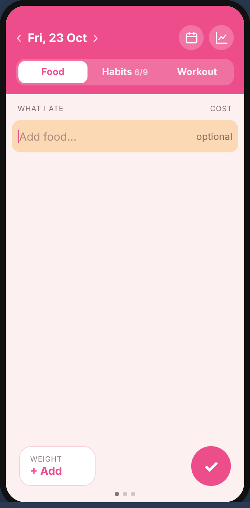
1. Open the appToday’s date, cursor ready. Icons: calendar and weight graph.
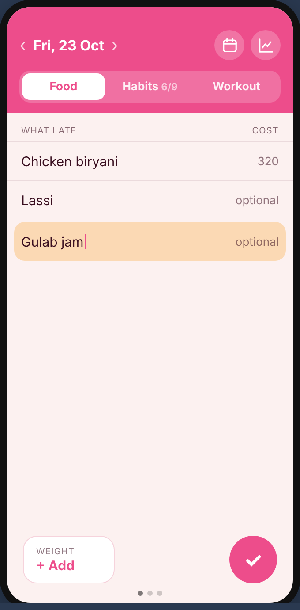
2. Typing foodThe row you’re typing in turns peach. Enter goes to the next line.
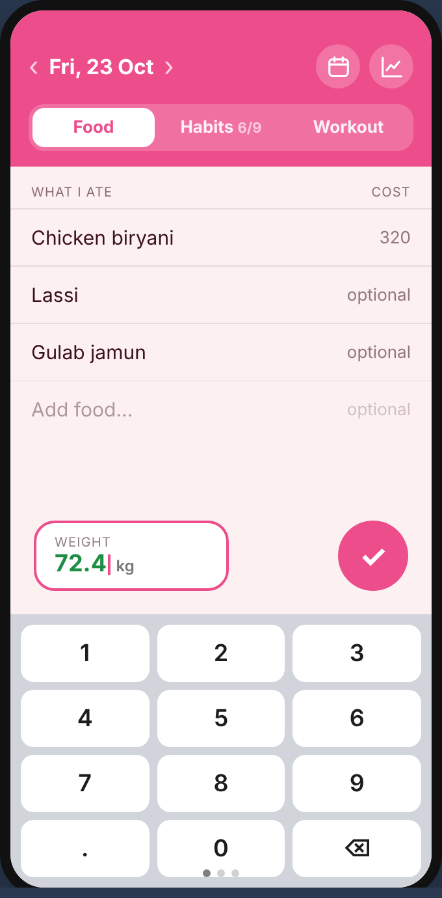
3. Entering weightTap the box and type, using the number keyboard.
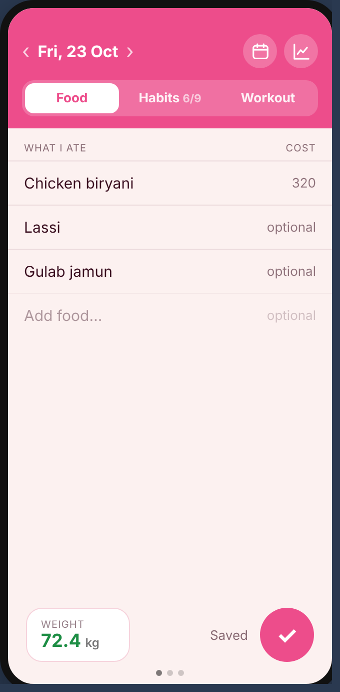
4. SavedTap ✓ and you’re done.
Food & weight: dashboards
Opened from the two icons on the Food tab.
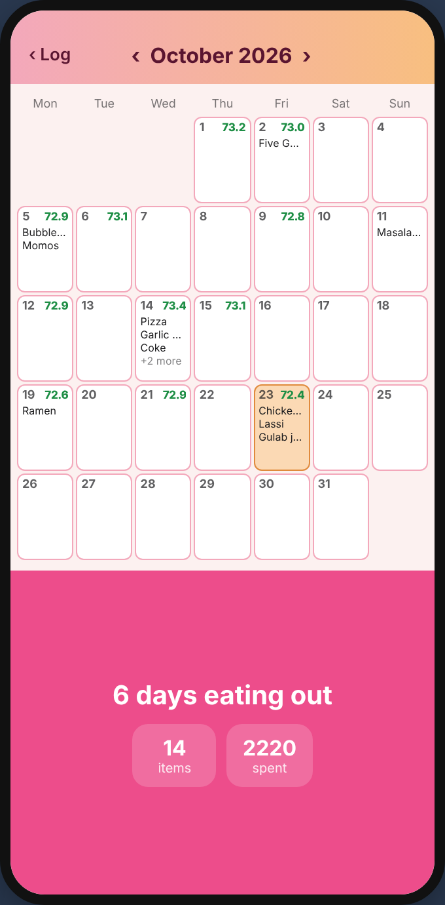
5. Food calendarFoods on each day, weight in green, and the month summary.
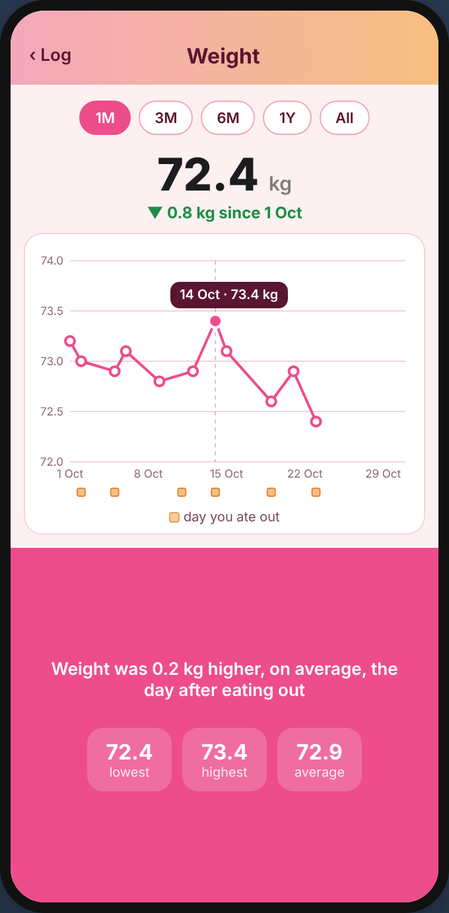
6. Weight graphWeight over time, with eating-out days marked.
Habits (green)
Tab 2 of 3: swipe left from Food. The stats icon only appears on this tab.
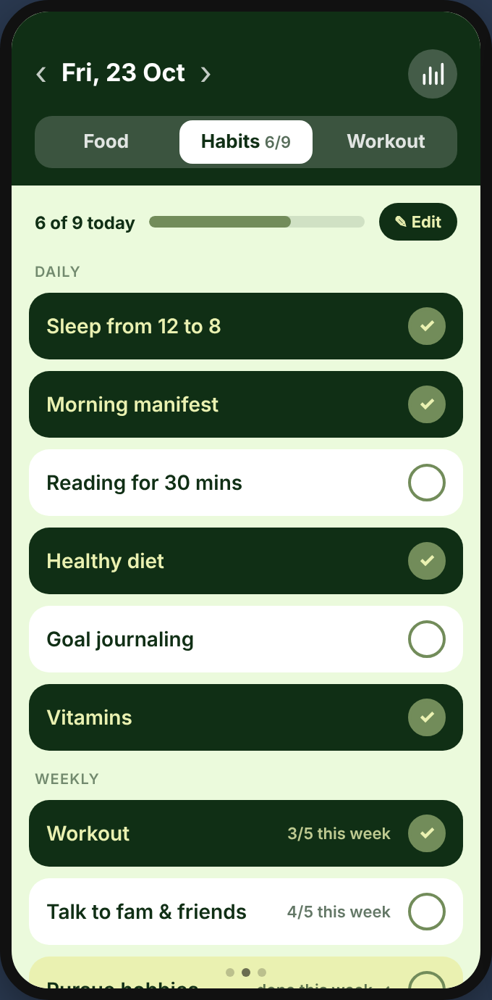
7. HabitsTap to tick; it saves straight away. Weekly habits show their count.
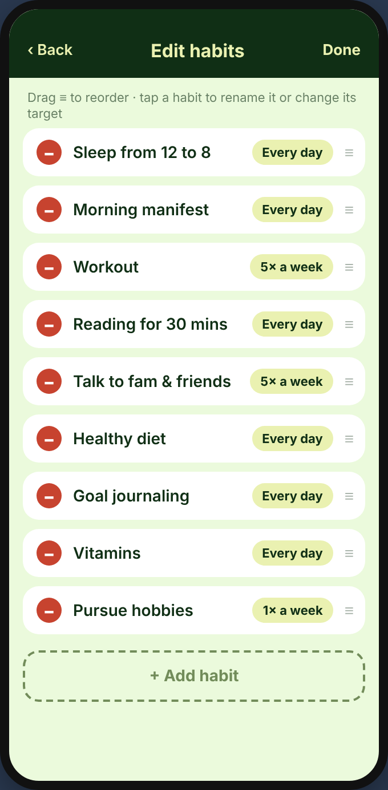
8. Edit habitsDelete (−), reorder (≡), or tap to rename or change the target.
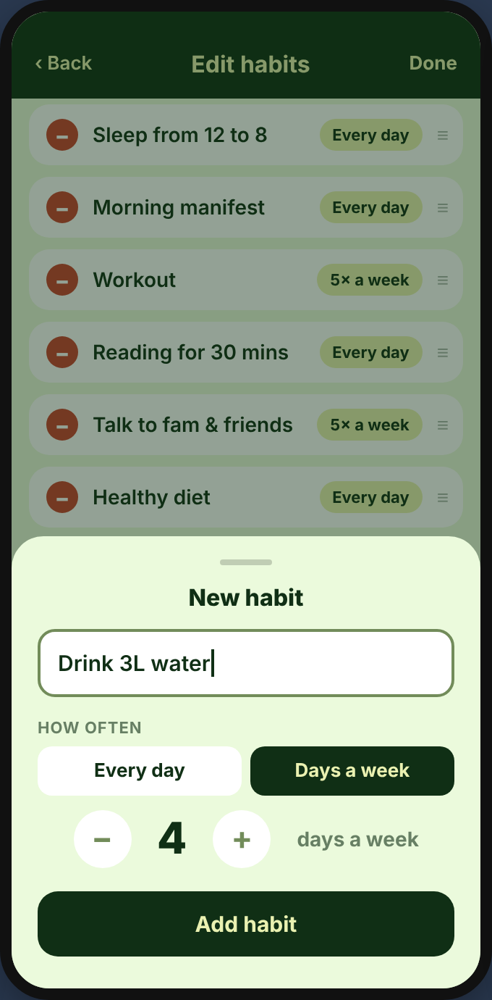
9. Add a habitA name plus “Every day” or “N days a week”.
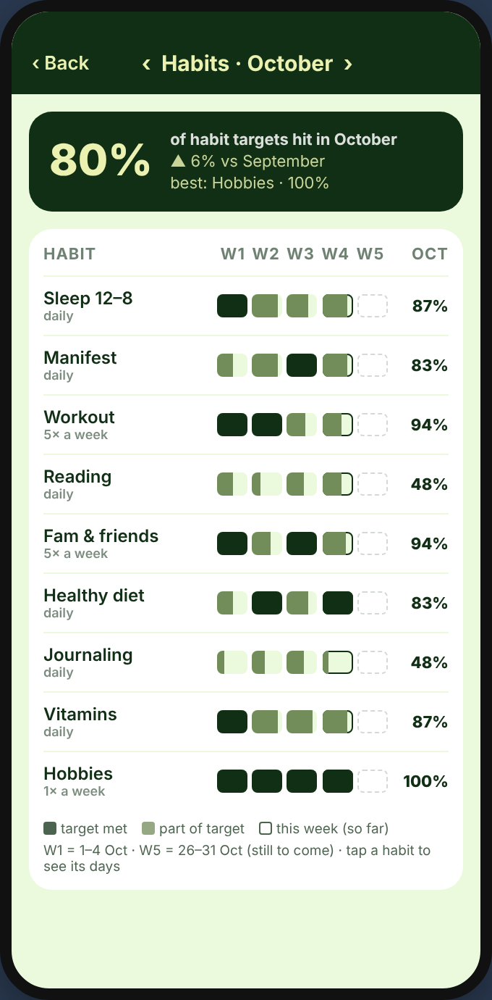
10. Habit dashboardWeek strips per habit, and the month score.
Workout (blue)
Tab 3 of 3: swipe left from Habits.
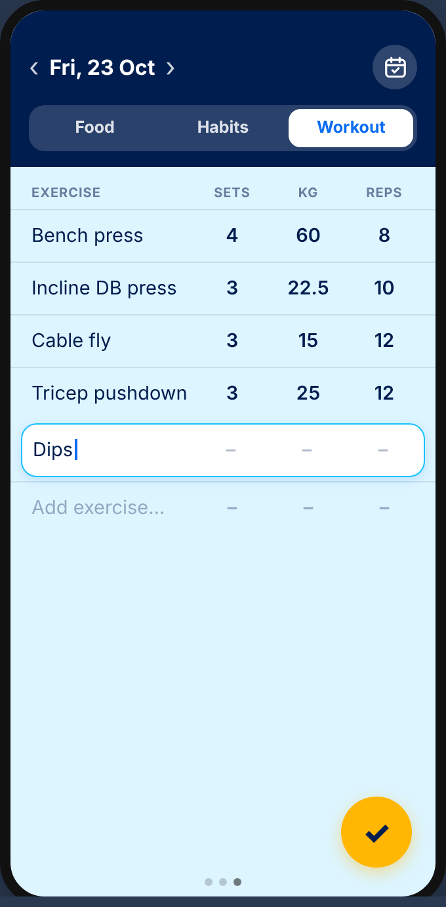
11. WorkoutExercise | Sets | kg | Reps. Enter moves to the next cell.
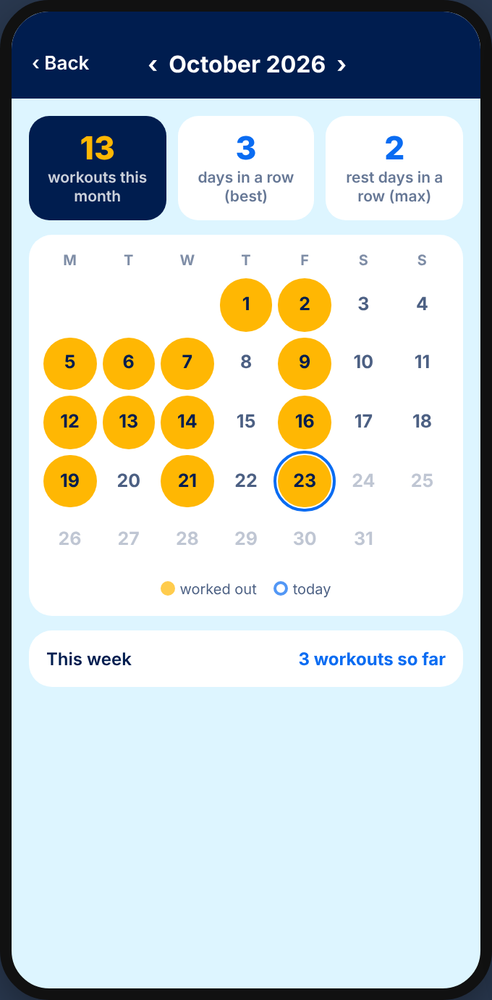
12. Workout calendarAmber = worked out. Tap a day to open it.